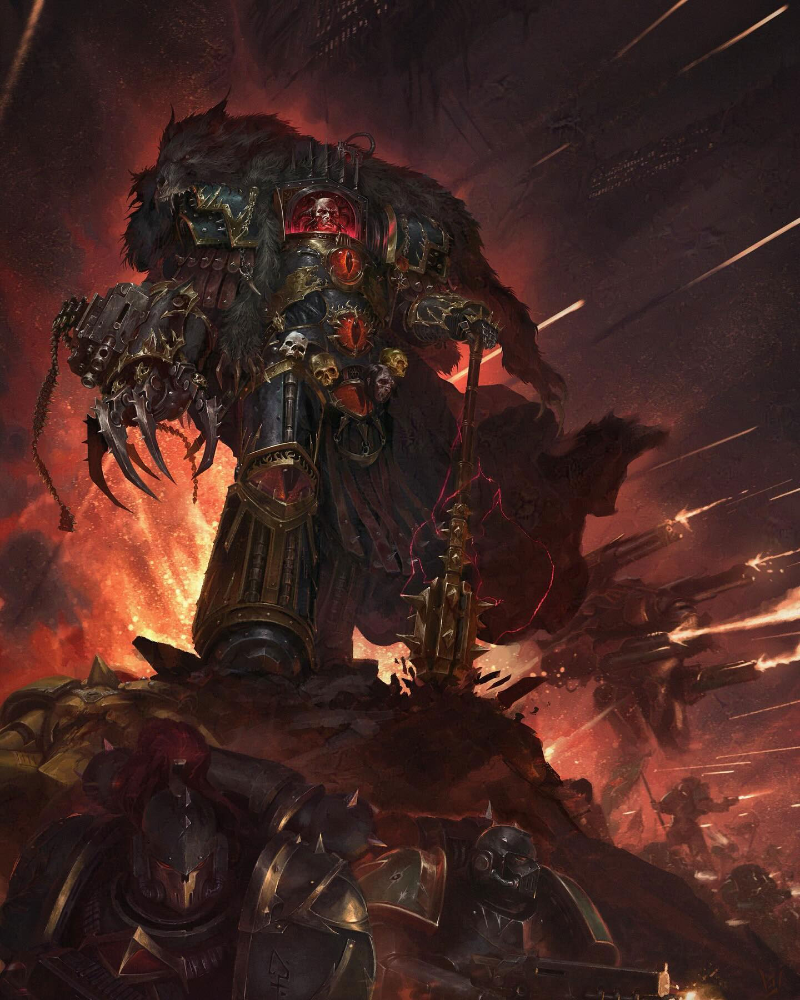
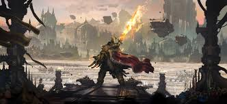

Az univerzum rövid története
Itt részletesen elmagyarázhatod a lore-t: az emberiség birodalmát, a káoszt, a Space Marine-okat, frakciókat, kulcsfontosságú eseményeket és karaktereket.
Főbb események és karakterek
Leírhatod a legfontosabb eseményeket és karaktereket a Warhammer 40k univerzumban, mint például az Emperor, Horus Heresy, a Great Crusade és más jelentős történelmi pillanatok.
| Esemény/karakter | Leírás | Kép |
|---|---|---|
| Emperor of Mankind | Az emberiség legnagyobb vezetője és védelmezője, aki a birodalom alapítója és irányítója. |  |
| Horus Heresy | Egy hatalmas polgárháború, amelyben Horus, az egyik legnagyobb Space Marine kapitány fellázadt az Emperor ellen. |  |
| Great Crusade | Az Emperor által vezetett hadjárat, amelynek célja az emberiség terjeszkedése és a galaxis meghódítása volt. |  |